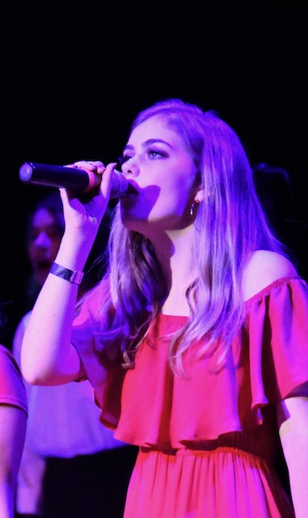

About Me
Biography
Hello! My name is Francesca De Angelis Nelson and I am currently a Junior at Loyola University New Orleans majoring in Music Industry Studies. I am interested in possibly becoming an artist manager or something or something else connected to music. I have also studied at John Cabot University in Rome, Italy for a semester and Saint Mary’s College of California also for a semester. I have always been passionate about music. I have played piano for over ten years and I am also a singer/songwriter. I went to a Performing Arts School for middle and high school in Oakland, California. In middle school I was in Instrumental Music where I studied piano for multiple hours a day and then for high school I switched to Vocal Music where I was in multiple choirs and studied vocal performance. I decided to come to Loyola University New Orleans to study the music industry.
Resume
Experiences
- Fox Theater Show, Oakland CA- Oakland Scool for the Arts
- S/he and Rise A Capella Groups- Lisa Forkish
Education
- Concert Choir- Oakland School for the Arts
- Music History- Oakland School for the Arts
- AP Music Theory- Oakland Scool for the Arts
- Popular and Commercial Ensembles- Loyola University New Orleans
- Music Theory- Loyola University New Orleans
Goals
- Artist Manager
Music
I am a singer/songwriter and I have sung in multiple choirs. Here are a few videos of me singing. The first one is of one of my original songs, "These Eyes, These Hands, This Voice" I performed with my sister at the Fox Theater in Oakland, California for a show with my high school. The second one is a video of my choir singing "Run To You" by the Pentatonix.
Videos
Contact Me
Email: francescadeangelisnelson@gmail.com
Phone Number: (510)-282-5688